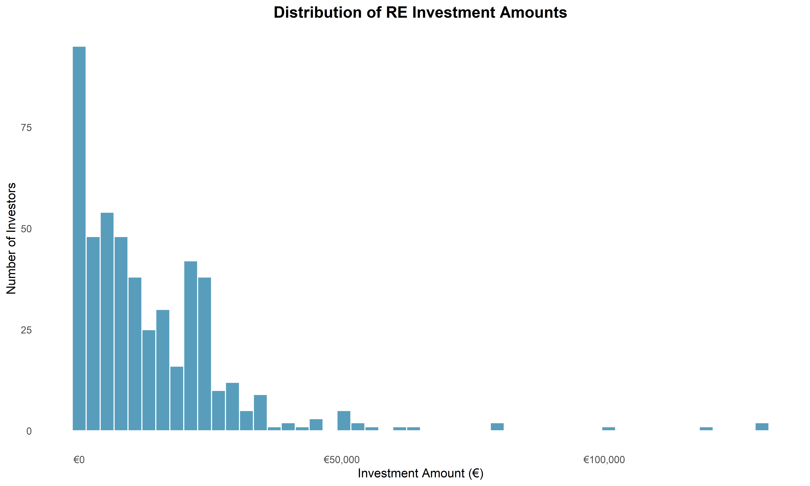
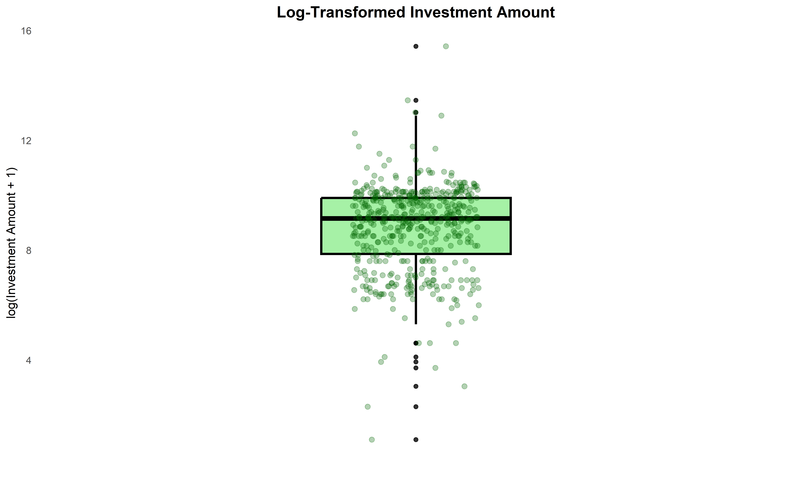
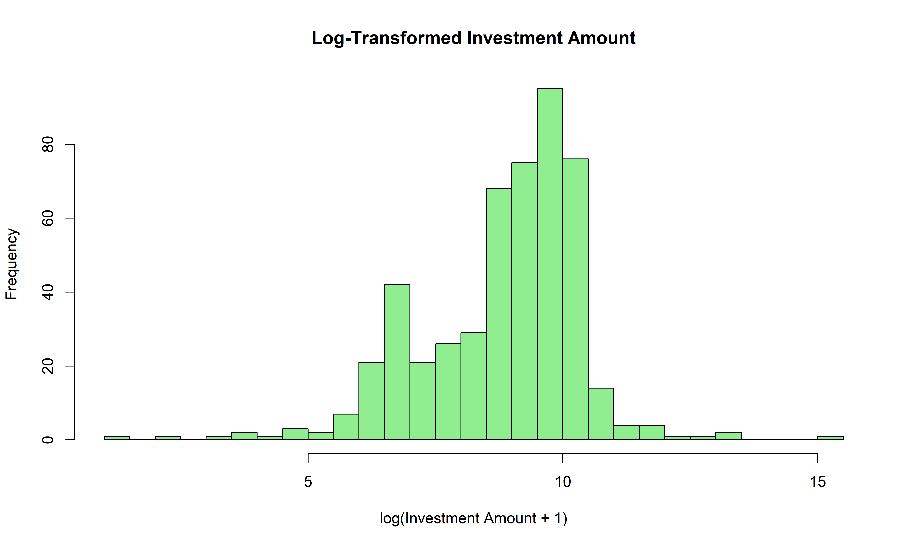
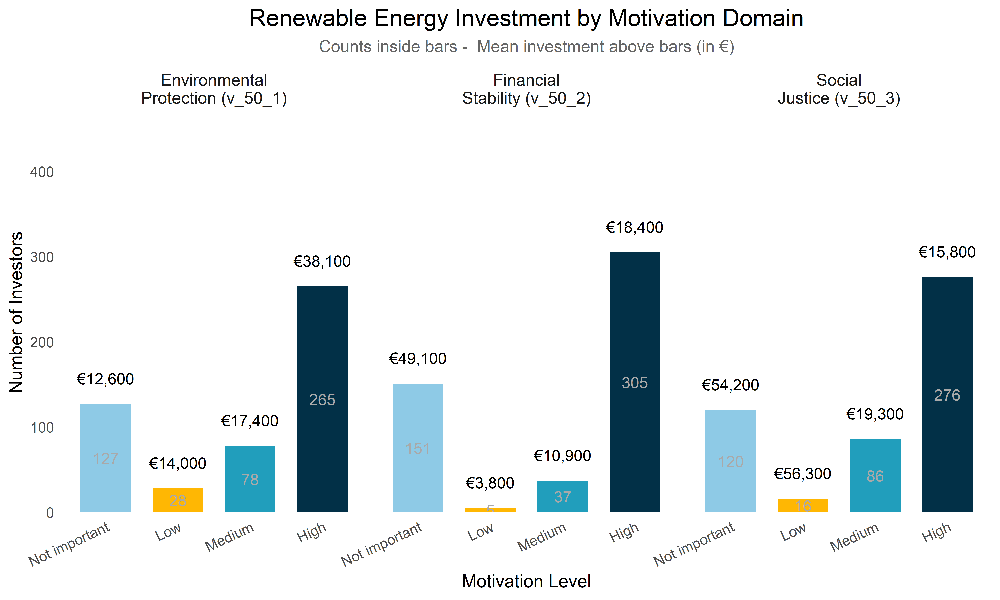
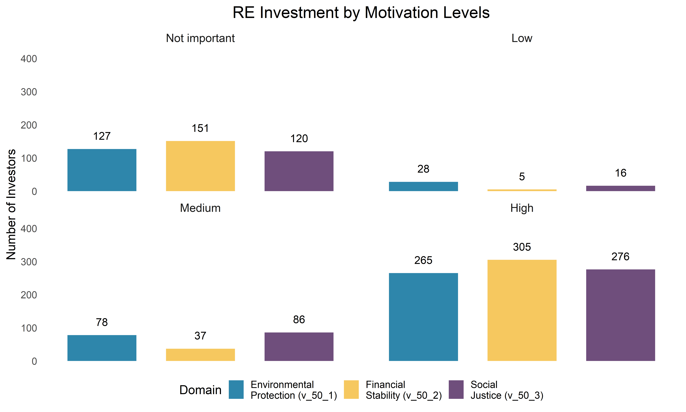
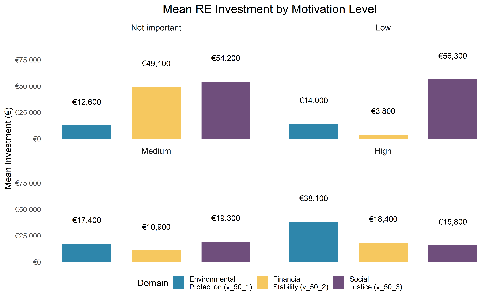
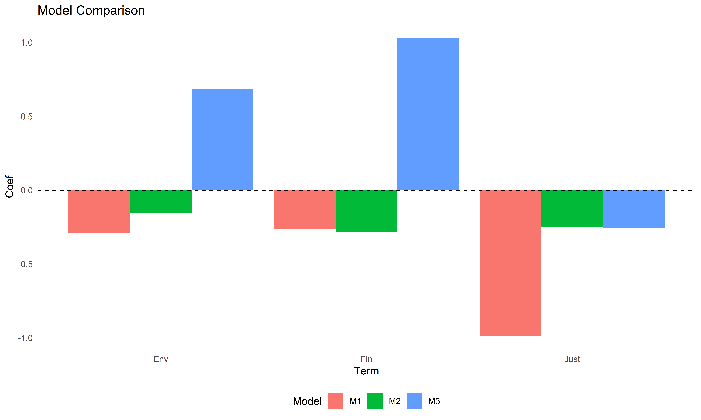

The global energy transition has become one of the defining challenges of the twenty‑first century. While renewable technologies have advanced rapidly, achieving deep decarbonization requires more than expanding wind and solar capacity. The transition demands a reconfiguration of energy systems, new forms of community participation, and significant behavioral change at the household level. These elements are increasingly recognized as essential for addressing climate change, strengthening energy security, and reducing energy poverty across Europe.
Sustainable energy is necessary not only to limit greenhouse gas emissions but also to reduce dependence on imported fossil fuels and to improve affordability for vulnerable households. Yet renewable technologies introduce a structural challenge absent from conventional energy systems: volatility. Solar and wind generation fluctuate with weather and daily cycles, creating mismatches between supply and demand that existing grid infrastructures were not designed to manage. As renewable penetration grows, this intermittency becomes a central barrier to achieving a fully decarbonized energy system.
Energy communities have emerged as an institutional response to these challenges. By enabling local ownership of renewable installations, shared energy storage, and coordinated demand‑side management, they help stabilize consumption patterns and integrate variable generation more effectively. Their social dimension is equally important: community participation increases acceptance of renewable projects, strengthens local engagement, and encourages households to adopt energy‑efficient behaviors. Research shows that when households co‑own renewable systems, they become more attentive to consumption, more willing to invest in efficiency, and more responsive to peer influence effects that extend even to low‑income groups when participation is made accessible.
Because energy transitions depend not only on technology but also on human behavior, understanding what motivates households to invest in renewable energy is crucial. Environmental concern, financial incentives, and social justice values all potentially shape investment decisions, yet their relative importance remains uncertain and may vary across demographic groups. Germany provides a particularly relevant context for this investigation, given its high level of citizen ownership in renewable energy and its long‑standing leadership in community‑based energy models.
This seminar paper examines how personal motivations influence household investment in renewable energy, drawing on detailed survey data from German households. By analyzing the interaction between motivations, socioeconomic characteristics, and institutional participation, the study identifies the factors that encourage or constrain household engagement in the energy transition. The findings aim to support in designing more effective, inclusive mechanisms that accelerate the shift toward sustainable, equitable, and community‑centered energy systems.
Library management and theme setup:
Before conducting any statistical analysis, it is essential to ensure
that the dataset is properly imported, cleaned, and prepared. In this
step, the data is loaded into R and processed to remove inconsistencies,
incorrect codes, and missing-value placeholders. Many observations in
the dataset use numeric codes such as -77, -66, or
-99 to represent missing or invalid responses. These values
must be converted into proper NA values so that statistical
models can handle them correctly.
Additionally, the column names are standardized to a consistent
format using clean_names(), which improves readability and
prevents errors during analysis. A custom cleaning function is applied
to both numeric and character variables to ensure that all missing or
invalid entries are treated consistently across the dataset.
This preprocessing step is crucial because clean and well‑structured data forms the foundation for reliable regression models, accurate visualizations, and meaningful interpretation of results. Without proper cleaning, the analysis could be biased, misleading, or even invalid.
data <- read.csv("C:/1. IBA/Old computer data/New folder/1. IBM/2025-26/Master/1. First/5. Energy transition/data_extended.csv")
clean_col_data <- data %>%
clean_names()
clean_missing <- function(df) {
df %>%
mutate(
# Numeric variables: -77 (main missing), and also -66/-99 if present
across(
where(is.numeric),
~ if_else(.x %in% c(-77, -66, -99), NA_real_, .x)
),
# Character variables: survey codes and blanks -> NA
across(
where(is.character),
~ case_when(
.x %in% c("-66", "-77", "-99", "NA", "NaN", "na") ~ NA_character_,
str_trim(.x) == "" ~ NA_character_,
TRUE ~ .x
)
)
)
}
data_clean <- clean_missing(clean_col_data)In this step, a subset of relevant variables is selected from the cleaned dataset to prepare the foundation for the statistical analysis. The variables chosen represent demographic characteristics, household structure, renewable energy ownership, motivational factors, and key survey responses related to investment behavior.
A crucial variable in this analysis is v_21_2, which captures the amount invested in renewable energy installations. This variable is measured in continuous euro values, making it suitable for modeling investment intensity.
The dataset also includes three important motivational variables:
v_50_1 — Environmental Protection Motivation
v_50_2 — Financial Stability Motivation
v_50_3 — Social Justice Motivation
These variables measure how important each motivation is to the respondent when making decisions. Their scale ranges from:
Not important at all
Not important
Neither important nor not important
Rather important
Strongly important
Don’t know
Very important
These variables help assess whether personal values influence renewable energy investment behavior.
Additionally, a binary indicator invest_RE is created to identify whether a respondent has invested in renewable energy in any form (ownership, co‑ownership, or installation). This variable is essential for distinguishing investors from non‑investors.
Finally, the income categories are cleaned by removing the “Other” category and retaining only Low, Medium, and High income groups to ensure consistent interpretation in the regression models.
This preprocessing step ensures that the dataset contains only relevant, interpretable, and analytically meaningful variables for the subsequent econometric analysis.
data_sub <- data_clean %>%
select(
gender, #Existing
age, #Existing
academic, #Existing
income_group,home_ownership,rural,urban,classification, #Existing
ownership, co_ownership,gender_1, #Existing
mot_inv_financial, mot_inv_env, mot_inv_justice, #Existing
v_4_1,v_5_1,v_3_1,v_20_1,v_21_2,v_22_1,v_22_2,v_22_3,v_22_4,v_22_5,v_22_6,v_26_1, #raw data
v_50_1,v_50_2,v_50_3,v_51_1,v_52_1,v_53_1,v_56_1 #raw data
) %>%
mutate(
# RE investor indicator (1 = any type of ownership, 0 = none)
invest_RE = if_else(
ownership == 1 | co_ownership == 1 | v_4_1 == 1,
1L, 0L,
missing = NA_integer_
),
# Education label for plots/tables
academic_label = case_when(
academic == 1 ~ "Academic",
academic == 0 ~ "Non-academic",
TRUE ~ NA_character_
)
)
# Removed the "other" category from the income category types
data_sub <- data_sub %>%
filter(income_group %in% c("Low", "Medium", "High")) %>%
mutate(
income_group = factor(income_group,
levels = c("Low", "Medium", "High"))
)
data_sub %>% stargazer(type = "text")##
## ===============================================================
## Statistic N Mean St. Dev. Min Max
## ---------------------------------------------------------------
## age 2,278 46.796 13.022 21.500 68.000
## academic 2,278 0.356 0.479 0 1
## home_ownership 2,278 0.487 0.500 0 1
## rural 2,272 0.088 0.283 0 1
## urban 2,272 0.912 0.283 0 1
## ownership 2,278 0.365 0.482 0 1
## co_ownership 2,278 0.175 0.380 0 1
## gender_1 2,278 0.555 0.497 0 1
## mot_inv_financial 2,278 1.000 0.000 1 1
## mot_inv_env 2,278 1.000 0.000 1 1
## mot_inv_justice 2,278 1.000 0.000 1 1
## v_4_1 2,278 1.635 0.482 1 2
## v_5_1 836 1.510 0.563 1 3
## v_3_1 2,278 1.451 0.504 1 3
## v_20_1 832 3.679 1.511 1 6
## v_21_2 498 26,998.500 227,603.400 2 5,000,000
## v_22_1 832 3.434 1.267 1 6
## v_22_2 832 4.023 1.123 1 6
## v_22_3 832 3.363 1.365 1 6
## v_22_4 832 3.971 1.167 1 6
## v_22_5 832 4.052 1.107 1 6
## v_22_6 832 3.530 1.377 1 6
## v_26_1 1,446 1.602 0.490 1 2
## v_50_1 2,278 5.390 1.635 1 7
## v_50_2 2,278 6.067 1.130 1 7
## v_50_3 2,278 5.768 1.378 1 7
## v_51_1 2,278 1.991 0.782 1 3
## v_52_1 2,278 1.665 0.741 1 3
## v_53_1 2,278 1.513 0.500 1 2
## v_56_1 2,278 5.651 1.761 1 8
## invest_RE 2,278 0.365 0.482 0 1
## ---------------------------------------------------------------This step focuses on preparing the final dataset used for the regression analysis. First, the data is filtered to include only respondents who have actually invested in renewable energy installations. This is done using the variable v_21_2, which records the amount invested in renewable energy technologies in continuous euro values. Respondents with missing values or zero investment are excluded to ensure that the analysis focuses on actual investors.
Next, the three motivational variables environmental protection (v_50_1), financial stability (v_50_2), and social justice (v_50_3) are transformed into meaningful categorical groups. These variables originally use a 1–7 scale:
Not important at all
Not important
Neither important nor not important
Rather important
Strongly important
Don’t know
Very important
To make the analysis more interpretable, these values are grouped into:
Low motivation (1–2)
Medium motivation (3–4)
High motivation (5–7)
Not important / Don’t know (6)
This categorization allows us to compare how different levels of personal motivation relate to investment behavior.
Finally, the investment amount is transformed using a
logarithmic transformation
(log(v_21_2 + 1)). This is a standard technique in
econometrics to reduce skewness, stabilize variance, and improve model
fit when dealing with monetary variables that typically have a long
right tail.
Only respondents with valid motivation categories are retained, ensuring a clean and consistent dataset for the regression models.
This step is essential because it creates the core variables used in the analysis and ensures that the dataset reflects meaningful investment behavior and interpretable motivational categories.
# Filter: Only RE investors with investment amounts
data_analysis <- data_sub %>%
filter(!is.na(v_21_2) & v_21_2 > 0) %>%
mutate(
# Categorize motivations
env_mot = case_when(
v_50_1%in% c(1, 2) ~ "Low",
v_50_1%in% c(3, 4) ~ "Medium",
v_50_1%in% c(5, 7) ~ "High",
v_50_1 == 6 ~ "Not important",
TRUE ~ NA_character_
),
fin_mot = case_when(
v_50_2%in% c(1, 2) ~ "Low",
v_50_2%in% c(3, 4) ~ "Medium",
v_50_2%in% c(5, 7) ~ "High",
v_50_2 == 6 ~ "Not important",
TRUE ~ NA_character_
),
just_mot = case_when(
v_50_3%in% c(1, 2) ~ "Low",
v_50_3%in% c(3, 4) ~ "Medium",
v_50_3%in% c(5, 7) ~ "High",
v_50_3 == 6 ~ "Not important",
TRUE ~ NA_character_
),
# Log transformation
invest_log = log(v_21_2 + 1)
) %>%
drop_na(env_mot, fin_mot, just_mot)
## Analysis: Personal Motivation (v_50_1, v_50_2, v_50_3) → RE Investment
# Filter: Only households who invested in RE + reported exact amount
data_analysis <- data_sub %>%
filter(!is.na(v_21_2) & v_21_2 > 0) %>% # Has investment amount
mutate(
# CATEGORIZE: 1-2=Low, 3-4=Medium, 5,7=High, 6=Not important
env_mot = case_when(
v_50_1%in% c(1, 2) ~ "Low",
v_50_1 == 3 | v_50_1 == 4 ~ "Medium",
v_50_1 == 5 | v_50_1 == 7 ~ "High",
v_50_1 == 6 ~ "Not important",
TRUE ~ NA_character_
),
fin_mot = case_when(
v_50_2%in% c(1, 2) ~ "Low",
v_50_2 == 3 | v_50_2 == 4 ~ "Medium",
v_50_2 == 5 | v_50_2 == 7 ~ "High",
v_50_2 == 6 ~ "Not important",
TRUE ~ NA_character_
),
just_mot = case_when(
v_50_3%in% c(1, 2) ~ "Low",
v_50_3 == 3 | v_50_3 == 4 ~ "Medium",
v_50_3 == 5 | v_50_3 == 7 ~ "High",
v_50_3 == 6 ~ "Not important",
TRUE ~ NA_character_
),
# Overall: Take HIGHEST motivation across 3 domains
overall_mot = case_when(
(env_mot == "High") | (fin_mot == "High") | (just_mot == "High") ~ "High",
(env_mot == "Medium") | (fin_mot == "Medium") | (just_mot == "Medium") ~ "Medium",
(env_mot == "Low") | (fin_mot == "Low") | (just_mot == "Low") ~ "Low",
TRUE ~ "Not important"
),
# Order for plotting
overall_mot = factor(overall_mot,
levels = c("Not important", "Low", "Medium", "High")),
# Log-transform investment for analysis
invest_log = log(v_21_2 + 1)
) %>%
drop_na(overall_mot)
# Check sample size
cat("N (RE investors with motivation data):", nrow(data_analysis), "\n")## N (RE investors with motivation data): 498##
## Not important Low Medium High
## 33 5 44 416## N = 498 RE investorsBefore running regression models, it is important to understand how the investment variable is distributed. The variable v_21_2 captures the amount invested in renewable energy installations in continuous euro values. Like most financial variables, investment amounts tend to be highly skewed, with a small number of respondents reporting very large investments.
To create a clear and interpretable visualization, the top 1% of extreme values are removed using the 99th percentile cutoff. This does not affect the statistical analysis but helps prevent the histogram from being dominated by a few unusually large investments. By focusing on the central 99% of the data, the plot provides a more accurate picture of the typical investment behavior among renewable energy investors. The histogram below shows how investment amounts are distributed across respondents. This visualization helps identify skewness, detect potential data issues, and justify the later use of a logarithmic transformation (log(v_21_2 + 1)) in the regression models.
# Remove extreme outliers for visualization (keep 99%)
# Showing 99% of data | Extreme outliers excluded for clarity
q99 <- quantile(data_analysis$v_21_2, 0.99, na.rm = TRUE)
ggplot(data_analysis %>% filter(v_21_2 <= q99), aes(x = v_21_2)) +
geom_histogram(bins = 50, fill = "#2E86AB", alpha = 0.8, color = "white") +
scale_x_continuous(labels = label_currency(prefix = "€")) +
labs(
title = "Distribution of RE Investment Amounts",
x = "Investment Amount (€)",
y = "Number of Investors"
) +
theme_minimal() +
theme(
panel.grid = element_blank(),
plot.title = element_text(face = "bold", size = 14, hjust = 0.5)
)
Investment amounts in renewable energy (captured by v_21_2) are measured in continuous euro values. As is typical with financial data, these values are highly right‑skewed: most respondents invest relatively small amounts, while a few invest very large sums. Such skewness can violate key regression assumptions, especially normality and homoscedasticity.
To address this, the investment variable is transformed using the natural logarithm:
\[ \text{invest_log} = \log(v_{21\_2} + 1) \]
The “+1” ensures that zero values can be included without mathematical issues.
This transformation compresses extreme values, reduces skewness, and produces a distribution that is more suitable for linear regression models. It also allows coefficients to be interpreted in percentage‑change terms, which is often more meaningful for monetary variables.
To visually assess the effect of the transformation, two plots are created:
A boxplot with jittered points, showing the spread, central tendency, and remaining outliers in the log‑transformed data.
A histogram, illustrating the overall shape of the transformed distribution.
Together, these visualizations confirm whether the log transformation successfully normalizes the data and prepares it for robust econometric analysis.
# Create log-transformed variable
data_analysis <- data_analysis %>%
mutate(invest_log = log(v_21_2 + 1))
# Boxplot
ggplot(data_analysis, aes(y = invest_log, x = "")) +
geom_boxplot(fill = "lightgreen", alpha = 0.8, color = "black", linewidth = 1, width = 0.3) +
geom_jitter(width = 0.1, alpha = 0.3, size = 2, color = "darkgreen") +
labs(
title = "Log-Transformed Investment Amount",
y = "log(Investment Amount + 1)",
x = ""
) +
theme_minimal() +
theme(
panel.grid = element_blank(),
axis.text.x = element_blank(),
plot.title = element_text(face = "bold", size = 14, hjust = 0.5)
)
hist(log(data_sub$v_21_2
+ 1),
breaks = 50,
main = "Log-Transformed Investment Amount",
xlab = "log(Investment Amount + 1)",
col = "lightgreen")
This section restructures the dataset to examine how renewable energy investment varies across different types of personal motivations. The three motivational variables environmental protection (v_50_1), financial stability (v_50_2), and social justice (v_50_3) were previously categorized into four levels: Not important, Low, Medium, and High. To compare these domains directly, the data is reshaped from a wide format into a long format, allowing all three motivations to be analyzed within a single structure.
The first summary table (domain_summary) reports, for each motivation domain and each motivation level:
n: the number of respondents in that category
mean: the average renewable energy investment amount (in euros)
This helps identify whether certain motivations are associated with higher or lower investment levels.
A second summary table (motivation_summary) aggregates respondents by their overall motivation category (a combined measure) and computes:
Mean investment
Median investment
Standard deviation
Rounded euro labels are added to improve readability in the final table.
These summaries provide an initial descriptive understanding of how personal preferences relate to renewable energy investment behavior. They serve as an important precursor to the regression analysis by highlighting potential patterns and differences across motivational groups.
# Create long-format motivation dataset
mot_long <- data_analysis %>%
select(v_21_2, env_mot, fin_mot, just_mot) %>%
pivot_longer(
cols = c(env_mot, fin_mot, just_mot),
names_to = "domain",
values_to = "motivation"
) %>%
filter(!is.na(motivation)) %>%
mutate(
domain = factor(
domain,
levels = c("env_mot", "fin_mot", "just_mot"),
labels = c(
"Environmental\nProtection (v_50_1)",
"Financial\nStability (v_50_2)",
"Social\nJustice (v_50_3)"
)
),
motivation = factor(
motivation,
levels = c("Not important", "Low", "Medium", "High")
)
)
# Summary table by domain × motivation
domain_summary <- mot_long %>%
group_by(domain, motivation) %>%
summarise(
n = n(),
mean = mean(v_21_2, na.rm = TRUE),
.groups = "drop"
)
# Summary: counts + mean/median/sd investment by overall motivation
motivation_summary <- data_analysis %>%
group_by(overall_mot) %>%
summarise(
n = n(),
mean_invest = mean(v_21_2, na.rm = TRUE),
median_invest = median(v_21_2, na.rm = TRUE),
sd_invest = sd(v_21_2, na.rm = TRUE),
.groups = "drop"
) %>%
mutate(
mean_label = scales::dollar_format(prefix = "€", big.mark = ",")(round(mean_invest, -2)),
median_label = scales::dollar_format(prefix = "€", big.mark = ",")(round(median_invest, -2))
)
# Final table
kable(
motivation_summary,
digits = 0,
col.names = c(
"Motivation Level", "N", "Mean (€)", "Median (€)", "SD", "Mean €", "Median €"
),
caption = "RE Investment by Personal Preference Level (v_50_1/2/3)"
)| Motivation Level | N | Mean (€) | Median (€) | SD | Mean € | Median € |
|---|---|---|---|---|---|---|
| Not important | 33 | 12791 | 7000 | 15258 | €12,800 | €7,000 |
| Low | 5 | 9400 | 5000 | 7627 | €9,400 | €5,000 |
| Medium | 44 | 14175 | 14850 | 11049 | €14,200 | €14,800 |
| High | 416 | 29693 | 9378 | 248925 | €29,700 | €9,400 |
This section examines how renewable energy investment levels differ across the three personal preference domains: environmental protection (v_50_1), financial stability (v_50_2), and social justice (v_50_3). To enable a direct comparison, the dataset is reshaped into a long format where each respondent contributes up to three observations—one for each motivation domain.
For every domain and motivation level (Not important, Low, Medium, High), the following summary statistics are calculated:
n: the number of respondents in that category
mean: the average investment amount in euros
These values are then visualized using a faceted bar chart.
Inside each bar, the count of respondents is displayed,
while the mean investment amount (rounded to the
nearest €100) is shown above the bar. This dual labeling allows the
viewer to see both the distribution of respondents and the typical
investment level associated with each motivation category.
This visualization helps answer a central question of the
study:
Do stronger personal motivations correspond to higher renewable
energy investment amounts?
By comparing patterns across the three domains, the plot provides an intuitive, descriptive overview before moving on to formal regression analysis.
# Create domain_summary from data_analysis
mot_long <- data_analysis %>%
select(v_21_2, env_mot, fin_mot, just_mot) %>%
pivot_longer(cols = c(env_mot, fin_mot, just_mot),
names_to = "domain",
values_to = "motivation") %>%
filter(!is.na(motivation)) %>%
mutate(
domain = factor(domain,
levels = c("env_mot", "fin_mot", "just_mot"),
labels = c("Environmental\nProtection (v_50_1)",
"Financial\nStability (v_50_2)",
"Social\nJustice (v_50_3)")),
motivation = factor(motivation,
levels = c("Not important", "Low", "Medium", "High"))
)
# Create summary table
domain_summary <- mot_long %>%
group_by(domain, motivation) %>%
summarise(
n = n(),
mean = mean(v_21_2, na.rm = TRUE),
.groups = "drop"
)
# NOW plot
ggplot(domain_summary, aes(x = motivation, y = n, fill = motivation)) +
geom_col(width = 0.7) +
geom_text(
aes(label = n),
position = position_stack(vjust = 0.5),
color = "darkgray",
size = 4
) +
geom_text(
aes(
y = n + 30,
label = scales::label_number(prefix = "€", big.mark = ",")(round(mean, -2))
),
color = "black",
size = 4
) +
facet_wrap(~ domain, ncol = 3) +
scale_fill_manual(values = c(
"Not important" = "#8ECAE6",
"Low" = "#FFB703",
"Medium" = "#219EBC",
"High" = "#023047"
)) +
scale_y_continuous(expand = expansion(mult = c(0, 0.4))) +
labs(
title = "Renewable Energy Investment by Motivation Domain",
subtitle = "Counts inside bars - Mean investment above bars (in €)",
x = "Motivation Level",
y = "Number of Investors"
) +
theme_minimal(base_size = 13) +
theme(
panel.grid = element_blank(),
legend.position = "none",
strip.text = element_text(size = 12),
axis.text.x = element_text(angle = 25, hjust = 1),
plot.title = element_text(size = 17, hjust = 0.5),
plot.subtitle = element_text(size = 12, hjust = 0.5, color = "grey40")
)
This section provides a deeper descriptive comparison of how renewable energy investment varies across the three motivation domains—environmental protection (v_50_1), financial stability (v_50_2), and social justice (v_50_3)—for each motivation level (Not important, Low, Medium, High). The goal is to understand whether certain motivations attract more investors or correspond to higher investment amounts.
First, a summary table is created that reports, for each combination of domain and motivation level:
n: the number of respondents
mean: the average investment amount in euros
Two complementary visualizations are then produced:
1. Bar Chart of Respondent Counts
The first plot shows how many respondents fall into each motivation level within each domain.
Bars represent the number of investors.
Counts are displayed above each bar.
Facets separate the four motivation levels.
This visualization highlights whether certain motivations (e.g., environmental protection) attract more respondents than others.
2. Bar Chart of Mean Investment Amounts
The second plot displays the average renewable energy investment for each domain and motivation level.
Bars represent mean investment amounts.
Euro values (rounded to the nearest €100) are shown above each bar.
Facets again separate motivation levels.
This plot helps answer whether higher motivation levels correspond to higher investment amounts, and whether this pattern differs across domains.
Together, these two visualizations provide a clear and intuitive overview of how personal preferences relate to both the number of investors and the amount invested, offering valuable descriptive insights before moving to regression analysis.
# Create summary2 from mot_long (which you already created)
summary2 <- mot_long %>%
group_by(domain, motivation) %>%
summarise(
n = n(),
mean = mean(v_21_2, na.rm = TRUE),
.groups = "drop"
)
# NOW plot
ggplot(summary2, aes(x = domain, y = n, fill = domain)) +
geom_col(width = 0.7) +
geom_text(
aes(y = n + 40, label = n),
color = "black",
size = 4
) +
facet_wrap(~ motivation, ncol = 2) +
scale_fill_manual(values = c(
"Environmental\nProtection (v_50_1)" = "#2E86AB",
"Financial\nStability (v_50_2)" = "#F6C85F",
"Social\nJustice (v_50_3)" = "#6F4E7C"
)) +
scale_y_continuous(expand = expansion(mult = c(0, 0.25))) +
labs(
title = "RE Investment by Motivation Levels",
x = NULL,
y = "Number of Investors",
fill = "Domain"
) +
theme_minimal(base_size = 13) +
theme(
panel.grid = element_blank(),
legend.position = "bottom",
strip.text = element_text(size = 12),
axis.title.x = element_blank(),
axis.text.x = element_blank(),
axis.ticks.x = element_blank(),
plot.title = element_text(size = 17, hjust = 0.5),
plot.subtitle = element_text(size = 12, hjust = 0.5, color = "grey40")
)
ggplot(summary2, aes(x = domain, y = mean, fill = domain)) +
geom_col(width = 0.7) +
geom_text(
aes(
y = mean + max(mean) * 0.4,
label = scales::label_number(prefix = "€", big.mark = ",")(round(mean, -2))
),
color = "black",
size = 4
) +
facet_wrap(~ motivation, ncol = 2) +
scale_fill_manual(values = c(
"Environmental\nProtection (v_50_1)" = "#2E86AB",
"Financial\nStability (v_50_2)" = "#F6C85F",
"Social\nJustice (v_50_3)" = "#6F4E7C"
)) +
scale_y_continuous(
labels = scales::label_number(prefix = "€", big.mark = ","),
expand = expansion(mult = c(0, 0.25))
) +
labs(
title = "Mean RE Investment by Motivation Level",
x = NULL,
y = "Mean Investment (€)",
fill = "Domain"
) +
theme_minimal(base_size = 13) +
theme(
panel.grid = element_blank(),
legend.position = "bottom",
strip.text = element_text(size = 12),
axis.title.x = element_blank(),
axis.text.x = element_blank(),
axis.ticks.x = element_blank(),
plot.title = element_text(size = 17, hjust = 0.5),
plot.subtitle = element_text(size = 12, hjust = 0.5, color = "grey40")
)
This model examines whether personal motivations—environmental protection, financial stability, and social justice—are associated with higher renewable energy investment levels. The dependent variable is the log‑transformed investment amount,
\[ \text{invest_log} = \log(v_{21\_2} + 1) \]
which reduces skewness and stabilizes variance in the investment data.
The model includes three key predictors:
env_ mot: Environmental protection motivation
fin_ mot: Financial stability motivation
just_ mot: Social justice motivation
To control for structural differences across individuals, the model incorporates fixed effects for income group, home ownership, age, gender, and academic background. These fixed effects absorb unobserved heterogeneity within each demographic category, ensuring that the estimated coefficients for the motivation variables reflect within‑group variation rather than differences between groups.
The econometric specification of Model A is:
\[ \text{invest_log}_{i} = \beta_0 + \beta_1 \text{env_mot}_{i} + \beta_2 \text{fin_mot}_{i} + \beta_3 \text{just_mot}_{i} + \alpha_{\text{income}(i)} + \alpha_{\text{home}(i)} + \alpha_{\text{age}(i)} + \alpha_{\text{gender}(i)} + \alpha_{\text{academic}(i)} + \varepsilon_i \]
The model is estimated using the felm() function from
the lfe package, which is designed for efficient
estimation of linear models with multiple fixed effects.
## Model A: OLS with Fixed Effects + Motivations
## FE: Income, Home, Age, Gender, Academic
## Predictors: Environmental, Financial, Social Justice Motivations
model_a_fe <- felm(invest_log ~ env_mot + fin_mot + just_mot | income_group + home_ownership + age + gender_1 + academic,
data = data_analysis)
summary(model_a_fe)##
## Call:
## felm(formula = invest_log ~ env_mot + fin_mot + just_mot | income_group + home_ownership + age + gender_1 + academic, data = data_analysis)
##
## Residuals:
## Min 1Q Median 3Q Max
## -7.2601 -0.7554 0.2528 0.8764 7.3068
##
## Coefficients:
## Estimate Std. Error t value Pr(>|t|)
## env_motLow -0.257003 0.330655 -0.777 0.4374
## env_motMedium -0.288567 0.212323 -1.359 0.1748
## env_motNot important -0.262374 0.171172 -1.533 0.1260
## fin_motLow -0.988056 0.712443 -1.387 0.1661
## fin_motMedium 0.068818 0.275670 0.250 0.8030
## fin_motNot important 0.230613 0.158146 1.458 0.1454
## just_motLow 0.723460 0.413178 1.751 0.0806 .
## just_motMedium 0.335584 0.205872 1.630 0.1038
## just_motNot important -0.009689 0.173458 -0.056 0.9555
## ---
## Signif. codes: 0 '***' 0.001 '**' 0.01 '*' 0.05 '.' 0.1 ' ' 1
##
## Residual standard error: 1.486 on 474 degrees of freedom
## Multiple R-squared(full model): 0.1551 Adjusted R-squared: 0.1142
## Multiple R-squared(proj model): 0.02245 Adjusted R-squared: -0.02499
## F-statistic(full model):3.784 on 23 and 474 DF, p-value: 1.713e-08
## F-statistic(proj model): 1.209 on 9 and 474 DF, p-value: 0.2868
## *** Standard errors may be too high due to more than 2 groups and exactDOF=FALSEModel B estimates the same relationship as Model A but without fixed effects. Instead of absorbing unobserved heterogeneity through fixed‑effect terms, this model includes demographic variables directly as control variables. This allows us to compare how the results differ when demographic characteristics are modeled explicitly rather than through fixed‑effect absorption.
The dependent variable remains the log‑transformed investment amount,
\[ \text{invest_log} = \log(v_{21\_2} + 1) \]
which reduces skewness and improves the suitability of the variable for linear regression.
The key predictors are the three motivation variables:
env_ mot: Environmental protection motivation
fin_ mot: Financial stability motivation
just_ mot: Social justice motivation
In this specification, demographic characteristics are included directly as covariates:
Income group
Home ownership
Age
Gender
Academic background
The econometric specification for Model B is:
\[ \text{invest_log}_{i} = \beta_0 + \beta_1 \text{env_mot}_{i} + \beta_2 \text{fin_mot}_{i} + \beta_3 \text{just_mot}_{i} + \beta_4 \text{income_group}_{i} + \beta_5 \text{home_ownership}_{i} + \beta_6 \text{age}_{i} + \beta_7 \text{gender}_{i} + \beta_8 \text{academic}_{i} + \varepsilon_i \]
This model provides a useful comparison to Model A by showing how the estimated effects of motivations change when demographic variables are treated as controls rather than fixed effects.
## Model B: OLS without Fixed Effect (same predictors, demographics as controls)
## Predictors: Environmental, Financial, Social Justice Motivations + Demographics
model_b_ols <- lm(invest_log ~ env_mot + fin_mot + just_mot +
income_group + home_ownership + age + gender_1 + academic,
data = data_analysis)
summary(model_b_ols)##
## Call:
## lm(formula = invest_log ~ env_mot + fin_mot + just_mot + income_group +
## home_ownership + age + gender_1 + academic, data = data_analysis)
##
## Residuals:
## Min 1Q Median 3Q Max
## -7.2810 -0.7373 0.2430 0.8886 7.1008
##
## Coefficients:
## Estimate Std. Error t value Pr(>|t|)
## (Intercept) 6.672105 0.387408 17.222 < 2e-16 ***
## env_motLow -0.157975 0.329166 -0.480 0.6315
## env_motMedium -0.286975 0.212480 -1.351 0.1775
## env_motNot important -0.247717 0.170496 -1.453 0.1469
## fin_motLow -1.079542 0.707136 -1.527 0.1275
## fin_motMedium 0.056582 0.274844 0.206 0.8370
## fin_motNot important 0.227028 0.156625 1.450 0.1478
## just_motLow 0.716010 0.411127 1.742 0.0822 .
## just_motMedium 0.313349 0.205459 1.525 0.1279
## just_motNot important -0.027794 0.173696 -0.160 0.8729
## income_groupMedium 0.374506 0.265719 1.409 0.1594
## income_groupHigh 0.585919 0.268713 2.180 0.0297 *
## home_ownership 1.024973 0.179397 5.713 1.94e-08 ***
## age 0.018170 0.005818 3.123 0.0019 **
## gender_1 -0.057178 0.141468 -0.404 0.6863
## academic 0.051923 0.144148 0.360 0.7189
## ---
## Signif. codes: 0 '***' 0.001 '**' 0.01 '*' 0.05 '.' 0.1 ' ' 1
##
## Residual standard error: 1.49 on 482 degrees of freedom
## Multiple R-squared: 0.1361, Adjusted R-squared: 0.1092
## F-statistic: 5.062 on 15 and 482 DF, p-value: 2.47e-09Model C extends the previous specifications by combining motivational variables with socioeconomic predictors, while applying fixed effects only to a subset of demographic characteristics. In this model, income group and home ownership are treated as explicit predictors, allowing us to estimate their direct association with renewable energy investment. Meanwhile, age, gender, and academic background are included as fixed effects, absorbing unobserved heterogeneity within these demographic groups. The dependent variable remains the log‑transformed investment amount,\[ \text{invest_log} = \log(v_{21\_2} + 1) \]
which reduces skewness and improves model fit.
The predictors in Model C include:
Income group
Home ownership
Environmental motivation
Financial motivation
Social justice motivation
Fixed effects are included for:
Age
Gender
Academic background
This hybrid structure allows the model to estimate the direct effects of income and home ownership while still controlling for unobserved differences across age, gender, and academic groups.
The econometric specification of Model C is:
\[ \text{invest_log}_{i} = \beta_0 + \beta_1 \text{income_group}_{i} + \beta_2 \text{home_ownership}_{i} + \beta_3 \text{env_mot}_{i} + \beta_4 \text{fin_mot}_{i} + \beta_5 \text{just_mot}_{i} + \alpha_{\text{age}(i)} + \alpha_{\text{gender}(i)} + \alpha_{\text{academic}(i)} + \varepsilon_i \]
This model helps identify whether motivational factors remain significant once income and home ownership are explicitly included, while still controlling for demographic heterogeneity through fixed effects.
## Model C: Income + Home + Motivations as PREDICTORS
## Fixed Effects: Age, Gender, Academic (the OTHER variables)
## Predictors: Income, Home Ownership, Environmental, Financial, Social Justice Motivations
model_c_fe <- felm(invest_log ~ income_group + home_ownership + env_mot + fin_mot + just_mot |
age + gender_1 + academic,
data = data_analysis)
summary(model_c_fe)##
## Call:
## felm(formula = invest_log ~ income_group + home_ownership + env_mot + fin_mot + just_mot | age + gender_1 + academic, data = data_analysis)
##
## Residuals:
## Min 1Q Median 3Q Max
## -7.2601 -0.7554 0.2528 0.8764 7.3068
##
## Coefficients:
## Estimate Std. Error t value Pr(>|t|)
## income_groupMedium 0.477774 0.271840 1.758 0.0795 .
## income_groupHigh 0.686295 0.279438 2.456 0.0144 *
## home_ownership 1.032226 0.181133 5.699 2.12e-08 ***
## env_motLow -0.257003 0.330655 -0.777 0.4374
## env_motMedium -0.288567 0.212323 -1.359 0.1748
## env_motNot important -0.262374 0.171172 -1.533 0.1260
## fin_motLow -0.988056 0.712443 -1.387 0.1661
## fin_motMedium 0.068818 0.275670 0.250 0.8030
## fin_motNot important 0.230613 0.158146 1.458 0.1454
## just_motLow 0.723460 0.413178 1.751 0.0806 .
## just_motMedium 0.335584 0.205872 1.630 0.1038
## just_motNot important -0.009689 0.173458 -0.056 0.9555
## ---
## Signif. codes: 0 '***' 0.001 '**' 0.01 '*' 0.05 '.' 0.1 ' ' 1
##
## Residual standard error: 1.486 on 474 degrees of freedom
## Multiple R-squared(full model): 0.1551 Adjusted R-squared: 0.1142
## Multiple R-squared(proj model): 0.1119 Adjusted R-squared: 0.06876
## F-statistic(full model):3.784 on 23 and 474 DF, p-value: 1.713e-08
## F-statistic(proj model): 4.975 on 12 and 474 DF, p-value: 8.555e-08
## *** Standard errors may be too high due to more than 2 groups and exactDOF=FALSETo evaluate whether the inclusion of fixed effects or additional predictors significantly improves model fit, an Analysis of Variance (ANOVA) is conducted between the three regression models. ANOVA compares nested models by testing whether the more complex model explains significantly more variance than the simpler one.
The null hypothesis for each comparison is:
\[ H_0: \text{The reduced model fits the data as well as the full model.} \] \(H_1: \text{The full model provides a significantly better fit.}\) The ANOVA F‑test statistic is computed as:
\[ F = \frac{ \left( RSS_{\text{reduced}} - RSS_{\text{full}} \right) / \left( df_{\text{reduced}} - df_{\text{full}} \right) }{ RSS_{\text{full}} / df_{\text{full}} } \]
Where:
RSS = residual sum of squares
df = degrees of freedom
“Reduced” = simpler model
“Full” = more complex model
Two comparisons are performed:
Model B → Model A
Tests whether adding fixed effects (income, home ownership, age, gender, academic) significantly improves model fit.
Model B → Model C
Tests whether adding partial fixed effects (age, gender, academic) and treating income + home ownership as predictors improves model fit.
The resulting F‑statistics and p‑values indicate whether the additional structure in Models A and C provides a statistically significant improvement over Model B.
# BASIC ANOVA COMPARISON (simple and clean)
# Model B vs Model A
anova_b_a <- anova(model_b_ols, model_a_fe)
fstat1 <- anova_b_a$`F`[2]
pval1 <- anova_b_a$`Pr(>F)`[2]
cat("M2 → M1: F =", round(fstat1, 2), "p =", round(pval1, 3), "\n")## M2 → M1: F = 1.8 p = 0.146# Model B vs Model C
anova_b_c <- anova(model_b_ols, model_c_fe)
fstat2 <- anova_b_c$`F`[2]
pval2 <- anova_b_c$`Pr(>F)`[2]
cat("M2 → M3: F =", round(fstat2, 2), "p =", round(pval2, 3), "\n")## M2 → M3: F = 1.8 p = 0.146# Simple summary table
data.frame(
Comparison = c("M2 → M1", "M2 → M3"),
F_stat = c(round(fstat1, 2), round(fstat2, 2)),
p_value = c(round(pval1, 3), round(pval2, 3))
)To compare how the estimated effects of the motivation variables and demographic controls differ across the three model specifications, the table below reports the coefficients from Model A (fixed effects), Model B (OLS with controls), and Model C (partial fixed effects). This comparison highlights how the inclusion or exclusion of fixed effects influences the magnitude and direction of the estimated coefficients.
The coefficient vector for each model can be written as:
\[ \hat{\beta}^{(m)} = \begin{pmatrix} \hat{\beta}_0 \\ \hat{\beta}_1 \\ \vdots \\ \hat{\beta}_k \end{pmatrix}, \qquad m \in \{A, B, C\} \]
where each model includes the same motivation predictors but differs in how demographic variables are treated (as fixed effects or as explicit covariates).
To complement the coefficient comparison, the table also reports the coefficient of determination:
\[ R^2 = 1 - \frac{RSS}{TSS} \]
which measures the proportion of variance in log investment explained by each model. Higher values indicate better model fit.
# 2. Coefficients
coef_comp <- data.frame(
Variable = names(coef(model_a_fe))[1:9],
Model_A = round(coef(model_a_fe)[1:9], 4),
Model_B = round(coef(model_b_ols)[2:10], 4),
Model_C = round(coef(model_c_fe)[1:9], 4)
)
print(coef_comp)## Variable Model_A Model_B Model_C
## env_motLow env_motLow -0.2570 -0.1580 0.4778
## env_motMedium env_motMedium -0.2886 -0.2870 0.6863
## env_motNot important env_motNot important -0.2624 -0.2477 1.0322
## fin_motLow fin_motLow -0.9881 -1.0795 -0.2570
## fin_motMedium fin_motMedium 0.0688 0.0566 -0.2886
## fin_motNot important fin_motNot important 0.2306 0.2270 -0.2624
## just_motLow just_motLow 0.7235 0.7160 -0.9881
## just_motMedium just_motMedium 0.3356 0.3133 0.0688
## just_motNot important just_motNot important -0.0097 -0.0278 0.2306##
## Model Fit:## Model A R²: 0.1551## Model B R²: 0.1361## Model C R²: 0.1551To visualize how the estimated effects of the three motivation variables differ across the three model specifications, the plot below displays the coefficients for environmental motivation (Env), financial motivation (Fin), and social justice motivation (Just) from Model A (M1), Model B (M2), and Model C (M3). Each bar represents the estimated coefficient:
\[ \hat{\beta}^{(m)}_j, \qquad j \in \{\text{Env}, \text{Fin}, \text{Just}\}, \quad m \in \{1,2,3\}. \]
The dashed horizontal line at zero helps identify whether each coefficient is positive, negative, or close to zero. Comparing the three models illustrates how the inclusion of fixed effects or demographic controls influences the magnitude and direction of the estimated motivation effects.
mot_data <- data.frame(
Term = rep(c("Env","Fin","Just"), 3),
Coef = c(coef(model_a_fe)[2:4], coef(model_b_ols)[2:4], coef(model_c_fe)[2:4]),
Model = rep(c("M1","M2","M3"), each=3)
)
ggplot(mot_data, aes(x=Term, y=Coef, fill=Model)) +
geom_col(position="dodge") +
geom_hline(yintercept=0, lty=2) +
labs(title="Model Comparison") +
theme_minimal() +
theme(panel.grid=element_blank(), legend.position="bottom")
Model A shows that none of the motivation variables reach statistical significance at the 5% level once income, home ownership, age, gender, and academic background are absorbed through fixed effects. Environmental and financial motivations display small negative and mostly insignificant coefficients, indicating no meaningful association with renewable energy investment within demographic groups. Social justice motivation shows the strongest positive pattern, with the “Low” and “Medium” categories approaching marginal significance (p ≈ 0.08–0.10), suggesting a possible but weak tendency for socially motivated individuals to invest more.
Overall, the fixed‑effects structure explains a substantial portion of the variation, while the motivation variables themselves contribute little explanatory power in this specification.
Model B shows that, after including demographic controls directly in the regression, the three motivation variables environmental, financial, and social justice do not exhibit statistically significant effects on renewable energy investment. Environmental and financial motivations remain small and negative for some categories, while social justice motivation again shows a modest positive pattern, with the “Low” category approaching marginal significance (p ≈ 0.08). In contrast, several demographic variables display strong and significant associations: home ownership is a large and highly significant positive predictor (p < 0.001), age shows a small but significant positive effect (p < 0.01), and high‑income respondents invest significantly more than low‑income respondents (p < 0.05). The model explains around 13.6% of the variance in investment, indicating moderate explanatory power.
Overall, Model B suggests that demographic characteristics particularly home ownership, income, and age play a more substantial role in shaping investment behavior than motivational factors.
Model C shows that income and home ownership are strong predictors of renewable energy investment when age, gender, and academic background are absorbed through fixed effects. High‑income respondents invest significantly more than low‑income respondents (p < 0.05), and home ownership remains a large and highly significant positive predictor (p < 0.001). Medium income also shows a marginally positive effect (p ≈ 0.08).
In contrast, the three motivation variables environmental, financial, and social justice do not reach statistical significance at the 5% level, although social justice motivation again displays a modest positive trend with marginal significance for the “Low” category (p ≈ 0.08).
The model explains around 15.5% of the variance in investment, indicating that demographic capacity factors (income and home ownership) contribute more to investment behavior than motivational differences. Overall, Model C reinforces the pattern that structural socioeconomic factors are more influential than stated motivations in predicting renewable energy investment.
The ANOVA tests comparing Model B with Model A and Model C show that neither of the more complex models provides a statistically significant improvement in model fit. For both comparisons, the F‑statistic is 1.8 with a p‑value of 0.146, which is well above the conventional 0.05 threshold. This indicates that adding fixed effects (Model A) or partial fixed effects (Model C) does not significantly reduce residual variance relative to the simpler OLS model (Model B). In practical terms, the additional structure introduced in Models A and C does not yield a statistically meaningful improvement in explanatory power.
As a result, Model B remains statistically comparable to the more complex specifications, even though the fixed‑effects models may still offer conceptual advantages for controlling unobserved heterogeneity.
The coefficient comparison across the three models shows that the motivation variables behave inconsistently depending on how demographic structure is modeled. In both Model A (full fixed effects) and Model B (OLS with controls), environmental and financial motivations display small negative or near‑zero coefficients, indicating weak and non‑robust associations with investment. Social justice motivation shows modest positive effects in Models A and B, but these effects disappear or reverse in Model C.
In contrast, Model C where income and home ownership enter as predictors and age, gender, and academic background are absorbed as fixed effects—produces noticeably larger positive coefficients for income‑related categories, while the motivation coefficients shift direction or shrink substantially. Overall, the comparison suggests that motivation effects are unstable across specifications, while structural socioeconomic factors (income, home ownership) consistently exert stronger and more reliable influence on renewable energy investment.
The coefficient comparison graph illustrates how the estimated effects of environmental (Env), financial (Fin), and social justice (Just) motivations vary across the three model specifications. For environmental motivation, Models A and B show small negative coefficients, while Model C reverses direction with a positive estimate, suggesting that controlling for age, gender, and academic background via fixed effects may reveal latent positive associations. Financial motivation is negative in Models A and B but turns positive in Model C, though the magnitude remains modest. Social justice motivation shows the most variation: Model A yields a large negative coefficient, Model B a smaller negative one, and Model C a near-zero effect.
Overall, the graph highlights that motivation effects are sensitive to model structure, and that Model C tends to produce more positive estimates, possibly due to its hybrid treatment of demographic variables.
Motivational preferences alone do not significantly predict renewable energy investment when demographic structure is accounted for, suggesting that values may be mediated by socioeconomic capacity.
The consistent strength of home ownership and income effects across models indicates that structural access plays a more decisive role than personal values in shaping investment behavior.
Social justice motivation shows the most promising behavioral signal among the three domains, but its influence remains modest and statistically fragile across specifications.
The instability of motivation coefficients across model structures highlights the sensitivity of preference-based predictors to how demographic heterogeneity is modeled.
While environmental concern is conceptually aligned with renewable investment, its empirical impact appears diluted when controlling for age, education, and income, pointing to a gap between stated values and financial action.
Self‑reported motivations may not reflect actual investment behavior : The motivation variables are based on subjective survey responses, which can be influenced by social desirability, recall bias, or respondents’ interpretation of the scale. This limits the precision with which personal values can be linked to financial decisions.
Cross‑sectional data restricts causal inference : Because the analysis relies on a single wave of SOEP data, the models capture associations rather than causal effects. It is not possible to determine whether motivations influence investment or whether investment experiences shape motivations.
Fixed‑effects structure reduces observable variation : Including multiple fixed effects absorbs substantial between‑group variation, which can weaken the statistical power of the motivation variables. As a result, some meaningful effects may remain undetected due to limited within‑group variability.
Potential measurement limitations in the investment variable : The dependent variable is based on self‑reported investment amounts, which may be imprecise or affected by rounding, underreporting, or differences in respondents’ understanding of “renewable energy investment.
Model sensitivity to specification choices : The coefficient comparison shows that motivation effects change direction and magnitude across Models A, B, and C. This indicates that results are sensitive to how demographic factors are modeled, suggesting that unobserved heterogeneity or omitted variables may still influence the estimates.
Lowitzsch (2019). Energy Transition - Financing Consumer Co-Ownership.
Jens Lowitzsch (2019). Introduction: The Challenge of Achieving the Energy Transition. In. Energy Transitions.
Jens Lowitzsch (2019). Conclusions: The Role of Consumer (Co-)Ownership in the Energy Transition. In. Energy Transitions.
Magalhães, R., Narracci, F., & Lowitzsch, J. (2025). Crowdfunding and Energy Efficiency Contracting: Exploring New Pathways for Private Investment in Building Renovations. FinTech, 4(1), 6. https://doi.org/10.3390/fintech4010006.
Magalhães, R., Lowitzsch, J., & Narracci, F. (2025). How (Co-)Ownership in Renewables Improves Heating Usage Behaviour and the Willingness to Adopt Energy-Efficient Technologies—Data from German Households. Energies, 18(12), 3114. https://doi.org/10.3390/en18123114.
Hanke, F., & Lowitzsch, J. (2020). Empowering Vulnerable Consumers to Join Renewable Energy Communities—Towards an Inclusive Design of the Clean Energy Package. Energies, 13(7), 1615. https://doi.org/10.3390/en13071615.
Jens Lowitzsch, Monika Bucha and Sarah Lonscher (2025). From Access to Ownership Energy Communities & Social Inclusion in the EU’s Energy Transition.
Christina E. Hoicka, Jens Lowitzsch, Marie Claire Brisbois, Ankit Kumar, Luis Ramirez Camargo (2021), Implementing a just renewable energy transition: Policy advice for transposing the new European rules for renewable energy communities, Energy Policy, Volume 156, 2021, 112435, ISSN 0301-4215, https://doi.org/10.1016/j.enpol.2021.112435.
I used large language model tools during the preparation of this seminar paper for tasks such as code generation, debugging, summarizing complex concepts, and improving linguistic clarity. These tools did not influence the analytical choices, data interpretation, or substantive conclusions presented in this work.